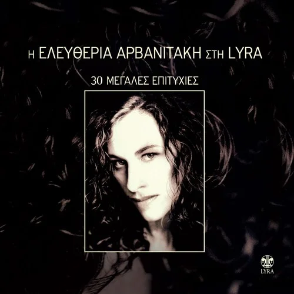
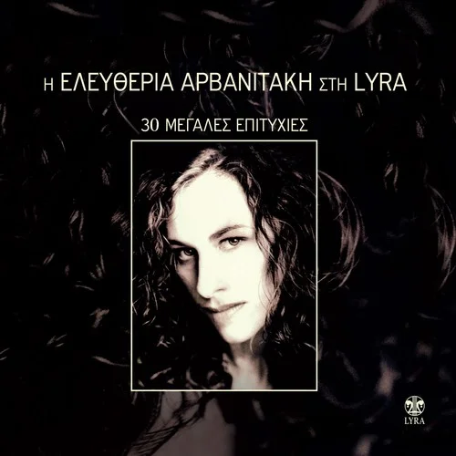

Javier Ruibal
Francisco Javier Ruibal de Flores Calero (El Puerto de Santa María, Cádiz, 15 de mayo de 1955), más conocido como Javier Ruibal, es un cantautor y arreglista español que combina estilos de flamenco, sefardí-magrebí, jazz y rock; y que ha participado como compositor en películas como Atún y chocolate (2004).
A lo largo de su carrera profesional ha recibido distintos reconocimientos, como la Medalla de
Oro de
Andalucía
(2007), el Premio Nacional de las Músicas Actuales (2017), el Premio Nacional de Cultura y el Premio
Goya a la
mejor canción original (2020).
Ha compuesto además para el cine, colaborando en las películas Atún y chocolate (Pablo
Carbonell), Lejos
del mar
(Imanol Uribe) y Arena en los bolsillos (César Martínez Herrada); para el programa de televisión
Ratones
coloraos,
de Canal Sur; para los espectáculos de baile flamenco Carmen y Medusa la guardiana, de Sara Baras; y
para
diferentes producciones audiovisuales (El mar de la libertad, A galopar y Algeciras-Tánger) de la
Diputación de
Cádiz. También lo ha hecho para otros cantantes como Martirio, Ana Belén, Javier Krahe, Mónica
Molina o
Pasión
Vega.
Algunos de sus discos son...


 
